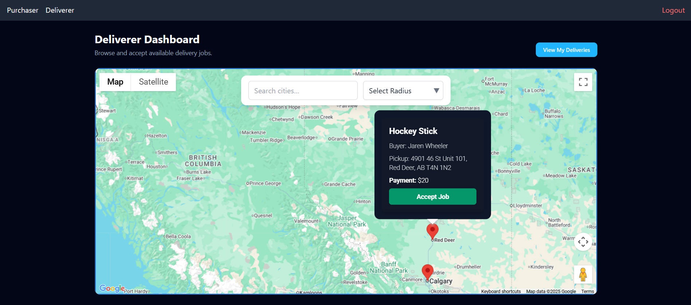
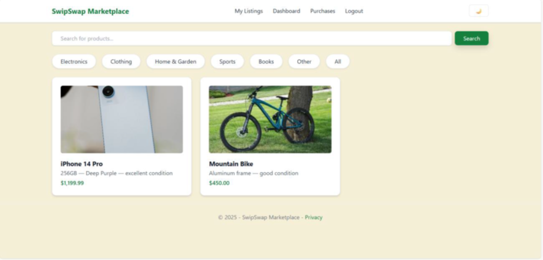

Jaren
Wheeler
Full-stack Software Engineer.
About Me
My name is Jaren Wheeler, I am a 25 year old physicist-turned-software engineer in Alberta, Canada. I discovered my love of software development while working away in the depths of the University of Alberta on particle physics projects, realizing that I was spending most of my time writing code rather than actually doing physics. And the greatest discovery I made was that I enjoyed it!
Once I recieved my Bachelor of physics, I realized I wanted to pursue full-stack development, and the best way to do that in my mind was to do extend my education further, by doing a hands-on full-stack diploma program at my local school: Red Deer Polytechnic. This is where I honed my craft and learned how to develop professional-grade and scalable applications. It was there that I also completed a year-long internship as a Software Engineer with the Department of Applied Research.
I am thoroughly excited to continue my journey of software engineering and bring my skills to the market. I plan to continue developing apps both personally and professionally and look forward to doing quality work for clients near and far.
Projects
HomeRun Delivery
A full stack Node.js application built with React, SQL Server, and REST API's.
HomeRun Delivery allows for those who buy products from peer-to-peer marketplaces such as Facebook Marketpalce or Kijiji to hire others to deliver those products to their home. With both options for posting deliveries and accepting delivery jobs, users can choose to either have their products delivered to their doorstep, or make a quick buck helping others get products to their doorstep.
Github Repo See the website

SwipSwap Marketplace
A full-stack application built in C# using ASP.NET Core MVC with SQL Server
SwipSwap Marketplace is a peer-to-peer marketplace of the likes of Facebook marketplace, created with the intent of integrating with HomeRun Delivery in the future. Users can buy and sell products locally in a seemless and simple manner without confusion.
Github Repo See the websiteCampusHire
A full-stack application built with Java Spring Boot and Thymeleaf frontend. Includes a MySQL database and REST API's.
CampusHire allows for students to browse job postings and apply for available jobs. It also allows for employers to post jobs and manage the application process. Utilizing a robust role-based system, accounts can be created for employers and students, redirecting them to the appropriate dashboard. Everything is managed by admin accounts, who can approve job postings, and a superadmin, who can assign or unassign individuals as admins.
Github Repo See the website